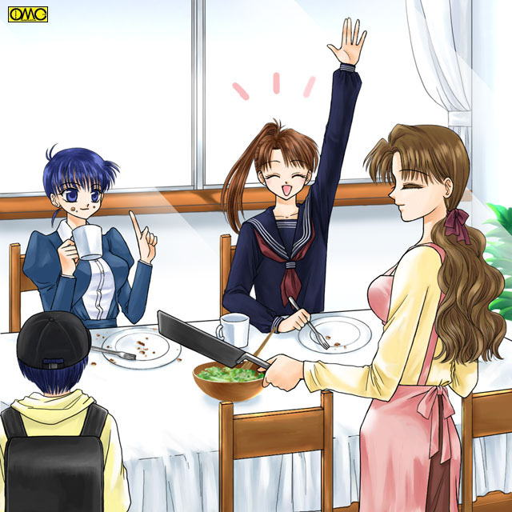

第２５話「のんきにのんびりのほほん」
赤星家の朝。この家で誰よりも早く起きるのは母である瑞枝…といいたいが実は一睡もしていない秀樹が朝帰りだった。
焦燥しきった表情が苦戦を物語る。
「お帰りなさい。あなた。ごくろうさま」
タイミングを見計らったように、世界でただ一人にしか出さない愛情入りのコーヒーを差し出す。
「ああ…ありがとう。ふう。まさかあんなにてこずるとはな…」
喫茶店のマスターとは仮の姿。警視庁を退職したと言うことになってはいたが、実は秘密捜査官として活躍中の秀樹であった。
この日もてこずる｢同僚｣達に手を貸す為に「ビッグ・ワン」になっていたのだ。
「子供たちは？｣
任務を完遂した達成感もあり、心から美味そうにコーヒーをすすりながら父親の表情に戻って訊ねる。
「薫ちゃんがそろそろ起きるわね」
「…それでまたみずきともめる気か？」
肉体は男で精神は少女の薫は、起きてからのメイクに余念がない。
一方の瑞樹は、登校のために少女にならないといけない。だから風呂場で水をかぶるのだが、その際にいつももめるのである。
原因は薫が突っかかることだが。
「まぁいい。私は午前中、休ませてもらう。任せてしまうが…いいか？」
「任せて。ゆっくり休んでてね」
恋をして結婚して。三児の母になっても、その微笑の魅力は変らない瑞枝だった。
「いっただきまぁす」
食卓を囲む制服姿のみずきと薫。ふたりともスカート姿。みずきはジャンパースカートの上からボレロと言う無限塾の制服。
薫はオーソドックスなセーラー服。濃紺の寒い季節用だった。もっとも入学当初は散々、教師に男子用を着る様に言われた。
脅しのようなことも言われたが、頑として女子として通した。
最初はからかっていた男子や、気味悪がっていた女子だったが、孤独に戦う姿と本気の覚悟に協調するものも増え、今では完全に女子として扱われている。
水泳の授業すら一緒の更衣室。女子生徒は元より薫も女生徒の裸に興奮することもないくらいだからたいしたものだ。
精神的には完全に女扱いだった。
もう一人の兄弟。赤星忍は小学生。しかし姉にしか見えない兄たちにため息が多くなる。

「みずきちゃん。パンケーキもう一枚食べる？」
そんな苦悩を知ってか知らずか笑顔でのんきに言う母親。
「頼むわ。今日は体育あるから」
そうでなくても甘党のみずき。パンケーキは好物だった。
「ママ。あたしにも焼いてちょうだーい」
鼻にかかった甘え声で薫がねだる。幸か不幸か男の肉体にしては声帯が細いのか、女の子の声にも聞こえる。たゆまぬ努力もあるが。
肉体が女の少女以上に｢女の子であろうとする｣から逆に女の子より美しくなっていた。
「はいはい。まだ時間あるでしょ」
慌しい時間が過ぎる。七瀬に迎えられみずきは登校した。薫。そして忍と順次登校をする。
「さぁて」
食器などを洗いに取り掛かる。終わると洗濯機を回し、その間に掃除をする。
店の前の掃除が終わり十時。開店時間。
一度、店内の様子をチェックした瑞枝は、落ち度がないことを確認して「準備中」の札をひっくり返すために店を出た。
「おはようございます。瑞枝さん」
「あら。おはようございます。日玉さん」
「いやいや。パンのお届けが遅れて申し訳ありません。モーニングサービスのお客さんがいたらトーストが出せないでしょ」
一番目の客は近所のパン屋の主であった。
値段に見合わないと言うか、儲けを考えていない原材料で作られたパンを、いつも提供していた。
「いつもありがとうございます。あの、よろしかったらコーヒー。いかがですか？」
大人の美貌で少女の微笑。なかなかこれに抗える男はいない。
もちろん瑞枝としては、お世話になっているパン屋さんに対しての、せめてものお礼である。
だが、引き止めれば商売に影響が出て、むしろありがた迷惑なのだが…
「ありがとうございます。ちょうどお茶にしたいと思ってたんですよ」
彼のほうが望んでいれば問題はないか。
別に彼があつかましいわけではない。人の好意を素直に受け止めるだけである。
ましてや憧れの『マドンナ』。他の客が来るまでの甘い時間…のはずだった。が、
「ちーっす」
大柄な男が入ってきた。短く刈り込んだ髪。トレードマークのはっぴ。
「あら。運転手さん。いらっしゃい」
「いらっしゃいました」
柔らかい声にめろめろの表情のトラック野郎。そしてふと視線に気がつくと、パン屋の店主が「邪魔すんな」と言うオーラを発していた。
「なんだ。親父。いたのか」
わかっていておちょくるように言う。
「いたのかじゃないよ。お前、仕事はどうなんだよ？」
『甘い一時』を邪魔されて声に自然とトゲが。
「さっき大阪から帰ってきたばかりだよ。そんなわけで瑞枝さん。眠気覚ましにコーヒーください」
もちろん前半と後半で、表情と声がまったく違うのは言うまでもない。
「あら？ お疲れなら甘いココアがいいかしらと思ったけど。わかりました。コーヒーですね」
「ココアください」
「でも、眠いんじゃ」
「だからぐっすり寝るためにココアください。愛情たっぷり入ったココアください」
「わかりました。待っててくださいね」
「待ちます。いくらでも」
この勝負はトラッカーの優勢かと思われたが
「おはようございまーす」
クリエイター風の男が入ってきた。それに対しても、柔らかい微笑の瑞枝。
「いらっしゃい。先生」
「モーニングで」
「はぁい」
三人の争いになった。
「なんでこんなところまで朝飯くいに来るんだよ？」とトラッカー。
「こむと麻里亜に食われた…じゃなくて、いいだろ。別に」
どうやらこちらも知り合いのようである。そして
「おはようございます」
「げっ。カイザーまで」
黒尽くめの細身の男。通称。ツーショットカイザーもこの場に。
「いらっしゃいませ。何にいたします？」
「それでは、まずはツーショットを一枚」デジカメを差し出す。
全力で阻止された…と思いきや、それぞれ便乗して写真撮影になるのであった。
「しっかしこれだけそろうとはなぁ」
「あと異国がくりゃ完璧じゃん」
「学校サボれっていってやれ」
「でも美人の先生がいるから、サボりたくないとも」
いきなりにぎやかな店内である。そうなるとやかましくて寝てられないのが秀樹である。
仕方ないので店に出る。
「あなた。もういいの？」
「ああ。これじゃ寝られん…」
だんなの登場にいきなり萎えた面々は、それぞれ職場なり目的地へと移動した。皮肉にも静かになった。
新宿署。金髪にひげ。まるでロックミュージシャンのような男が歩いている。
何人かの警官は奇異の眼で見るが、彼はまるで意に介さずまっすぐ操作一係へと歩を進める。
扉を開けて中を見る。中には三人ほどの男性が書類を書いていた。
「ジョーさん」
中年の刑事にその男は声をかけた。中年刑事…上条繁は顔を上げると再会に顔をほころばせる。
「おお。ドクトール。久しぶり」
広く深くあらゆることに精通していたゆえの金髪の男のニックネームだった。
ドクトールは一係室に入るといきなり用件を切り出す。
「電話で話した件ですが」
「密輸拳銃を買った男の話だな」
ドクトールは神奈川県警の刑事だ。そして最近、拳銃密売が行われていることを突き止め、売人を逮捕したがすでに何丁かは売れていた。
そのうちの一人が新宿所管内にいるのでここに来た。
客が少なくなったこともあり、店を秀樹に任せて買い物に出る。スーパーマーケットに出向くと店内に緊張が走る。
「…きた！」
店長がつぶやく。
「来たって…まさか万引きの常習犯？」
入ったばかりのアルバイトがつぶやくと
「万引きがばれているならとっくにつかまっているだろうが。だが逆万引きと言うか」
「逆？」
そんな会話を他所に、瑞枝は楽しそうに買い物を続ける。子供たちは学校で昼食をとるし、自分たちの分はあるので日用品の買出しだ。
途中、近所の主婦とにこやかに会話したりして、のんびりと買い物をする。
アルバイト店員はレジを打ちながら（以前に経験あり）注目していた。
だがこれといっておかしなそぶりはなかった。そして偶然だが自分のレジにやってきた。
確認しながら仕事をこなす。
「２９９９円になります」
「すっごぉーい」
素っ頓狂な声にアルバイトは驚いた。
「もうちょっでぴったり。こんなことってあるのねぇ」
「は…はぁ…そうですね…」
確かになかなかないことだが、ここまで驚くことかな？
そう思うアルバイトの前で瑞枝は、必死に財布を引っ掻き回していた。やがて諦めて申し訳なさそうに
「ごめんなさい。細かいのがないの。これでいいからしら？」
千円札を三枚差し出す。どうやらぴったし出そうとしていたらしい。
「はい。結構です（３００１円で四千円ならこのセリフも納得だが…）。三千円お預かりします。一円のお返しです。お確かめください」
返された一円玉をしげしげと見つめる瑞枝。その態度に何か間違って渡したかと不安になるアルバイト。
「あの…何か？」
「確かに一円玉だわ。はい。確かめました」
どっと疲れが押し寄せたアルバイトだった。
さらに彼女はかごの中身を袋に詰めなおし終えて、ふと広告が目に留まった。
それを見ていて何か納得したのか頷きながら手ぶらで帰ろうとする。
慌てて呼び止める新参レジ打ち。
「お客さーん。買ったもの…だけじゃなくて財布まで忘れてますよっ」
呼び止められて瑞枝は自分の失敗に気がつき、照れ笑いを浮かべながら戻ってきた。
「あらやだ。わたしったら。恥ずかしい。どうもありがとうございました」
深々と礼をする瑞枝に何とか笑みを返す。思わず｢レジ休止中｣のプレートを出して深くため息をつくアルバイト。
｢わかったか。あのお客さんは『常習犯』だ。一度放っておいたら、とうとう取りに来なかったので保管しておいたこともある｣
指導員の言う「逆万引き」の意味が理解できたアルバイトだった。
お昼。軽い食事もあるので女性にも人気の喫茶レッズであった。
だからといって男性が来ないわけではない。一人の青年が店に入ってきた。
カチャカチャと鍵の束を弄びながら来たので自動車だろう。付近にコインパーキングがあるためこういうケースは結構ある。
「いらっしゃいませ。何にいたしましょう」
初めての客である。だからといって扱いは変らない。
常連は大事だが、一見さんはもっと大事である。ここでいい印象を持ってもらえれば常連にもなってもらえるかもである。
それ以前に瑞枝も秀樹も差別をする人間ではない。
「あ。それじゃココアください♪」
「かしこまりました」
瑞枝の笑みにボーっとなる青年。瑞枝が下がり待つ間は何か写真を広げていた。そこに
「お待たせいたしまた」
甘い香りのココアがやんわりとテーブルに置かれる。そして見るともなしに写真が目に入る。
「あらぁ。お人形ですか？」
「あ。そうなんです。ドールは私のシュミでして〜♪」
「可愛い〜〜この子のお名前はなんていうんですか」
それまでの大人ぶりはどこへやら。少女趣味全開の瑞枝である。
「ななちゃんです。置いてきたんですが今日は東京に出てきたついでに、ドール服を譲ってくださる方とここで待ち合わせでして♪」
「まぁ〜。私も一緒に見ていいですか」
「はい。よろしければ〜♪」
「うわぁ。楽しみ。どんな可愛い服なのかしら」
（あいつはほんとに誰とでも仲良くなれるな…）
カウンターで苦笑する秀樹であった。
こんなのんきな雰囲気と無縁な場所がある。
近くのサラ金に強盗が入ったのだ。
男はどこからか入手した拳銃で、天井に向けて威嚇の一発。
あとはもう恐怖におびえる店員に金を詰めさせるだけである。
二分が経過して男はアタッシュケースに詰めた金を持ち逃走。
直後に非常ベルが鳴り響き警察に通報された。
同じころ。再び鍵の束を手にした男が店を訪れた。ちなみに秀樹は「本来の仕事」の報告のため不在だった。
「いらっしゃいませ」
男は店内を一通り見渡す。店内にはカップル。初老の男。中年男性。そしてやくざとその弟分であった。
（見た目はどうあれ、きちんと代金を払えば拒絶はしない。だが、ひとたび迷惑を及ぼせば出入り禁止である）
「お待ち合わせですか？」
「あ。はい」
美人に優しい声と口調で問いかけられて彼はどぎまぎする。
「あの…喫茶レッズはこちらですよね？」
「はい。そうですわ」
「おかしいなぁ…ここで版画を譲ってもらえるはずなのに…あちらは携帯を持ってないし…どうするかな」
そのとき彼の方の携帯電話が鳴った。
「はい。千太郎です。ああどうも。はい。東京には着きました。え？ 急用。わかりました。じゃ夜まで時間を潰します」
携帯を切ると千太郎はぼやく。
「まいったな…時間が出来たのはいいが時間つぶしで電気街なんぞに出向いたら、版画の購入資金を使っちゃいそうだし…」
しかしさすがに喫茶店に長時間は居座れないので彼は出ることにした。
結果的にそれで彼は難を逃れた。
激しいカーチェイス。パトカーと普通の車。
「あにきぃぃぃぃ」
「舌噛むからだまってろ」
男たちはサラ金強盗だった。だが逃走に失敗。警察に追われてめちゃくちゃに走っていた。
それが祟った。スピンしてしまったのだ。
「うわあああああーっっっ」
パニックになる車内。後方部分が駐車しているほかの車にぶつかって止まった。
「あたたたた」
それでも何とか脱出する強盗たちだがふらふらする。迫るパトカーのサイレンが彼らを駆り立てた。
激しい激突音に喫茶レッズの客たちも一様におどろく。
「あ…アニキ？」
チンピラが不安な表情を隠さずに、やくざの顔を見る。
「へっ。心配いらねぇ。どんな揉め事も俺にかかりゃちょろいもんよ」
「さっ…さすがアニキ。お願いだ。オレをそんなアニキの舎弟にしてくれ」
「やめとけ。まっとうな道を歩くんだな」
パンチパーマにワインレッドのサングラスと言う、いかにもなやくざはシビアに言い切る。かと思えば
「怖いわ。雅彦さん」
「例え何があっても、僕は君を守って見せるよ。洋子さん」
『洋子』はその言葉に顔を輝かせ『雅彦』に抱きつく。
「嬉しい。あなたと婚約して本当によかった」そして
「事故か？ まぁどうでもいいこったがなぁ…人生も終わりのオレにしてみりゃなぁ」
初老の男は達観した口調で投げやりに言う。
「あらあら？ 大丈夫かしら。薫ちゃんもそろそろ帰ってくる頃なのに。あの娘に何かあったら」
瑞枝が確認のために出て行こうとしたそのときだ。
乱暴にガラス戸が開けられふたりの男が入ってきた。先に入ってきた方が天井に向けて発砲する。
「動くな！」
「……まぁ……」
ドラマでしか見たことのないシチュエーションに目をぱちくりさせる瑞枝。
もう一人。兄貴分が追っ手に向けて銃口を見せる。
「来るな。この店の奴らは人質だ。死なせたくないなら来るなっ」
そういわれては警官たちも手出しは出来ない。
喫茶レッズは篭城劇の舞台となった。